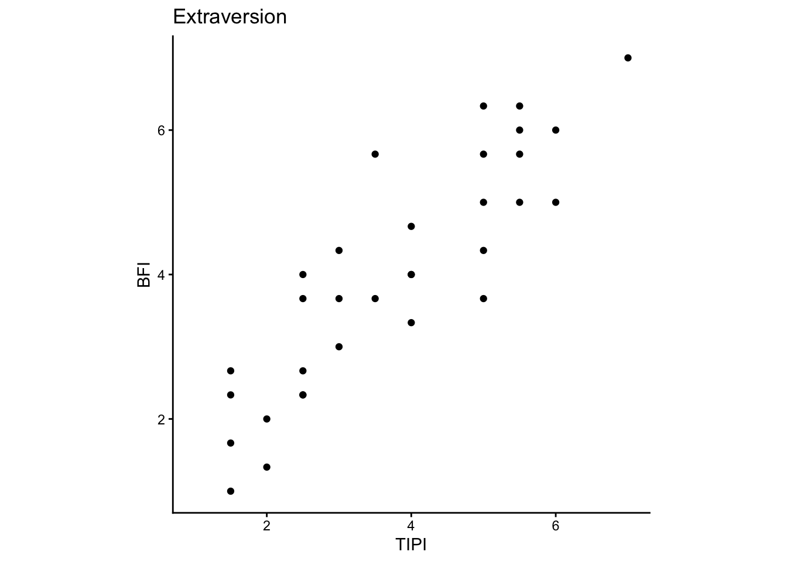

library(tidyverse) # for data wrangling and visualization
library(psych) # for describe() and scoreItems()
library(broom) # for tidying model output
library(papaja) # for APA style write up1 Reliability and Validity
In this lab, we will explore the concepts of measurement reliability and validity. Measurement is a critical aspect of empirical research, and it is the foundation for drawing valid conclusions from data. The high level question is: “Are we measuring what we think we are measuring?” To answer this question, we need to assess that the measure is targetting the construct of interest (validity) with a high level of precision (reliability).
This lab will use two personality trait scales, the Ten-Item Personality Inventory (TIPI, Gosling et al. 2003) and the Short Big Five Inventory (BFI, Lang et al. 2011), to demonstrate how to assess reliability and validity of measurement.
Learning Objectives
- Understand the concepts of reliability and validity in measurement.
- Calculate Cronbach’s alpha to assess internal consistency of a scale.
- Calculate composite scores for a scale.
- Calculate correlations between two scales to assess convergent validity.
- Visualize the relationship between two scales using scatterplots and regression lines.
- Interpret what the results of reliability and validity analyses mean in the context of research.
- Write up the results of reliability and validity analyses in APA style.
1.1 Preliminaries
Load the necessary packages for data wrangling, visualization, and analysis.
1.2 Data
Data for this lab comes from a survey of 32 participants who completed both TIPI and BFI.
TIPI Instruction: Here are a number of personality traits that may or may not apply to you. Please choose a number for each statement to indicate the extent to which you agree or disagree with that statement. You should rate the extent to which the pair of traits applies to you, even if one characteristic applies more strongly than the other. (Disagree Strongly = 1 …….. Agree Strongly = 7)
| Item | Trait | Reverse scored? |
|---|---|---|
| I see myself as …… Extraverted, enthusiastic. | Extraversion | No |
| I see myself as …… Critical, quarrelsome. | Agreeableness | Yes |
| I see myself as …… Dependable, self-disciplined. | Conscientiousness | No |
| I see myself as …… Anxious, easily upset. | Emotional Stability | Yes |
| I see myself as …… Open to new experiences, complex. | Openness to Experience | No |
| I see myself as …… Reserved, quiet. | Extraversion | Yes |
| I see myself as …… Sympathetic, warm. | Agreeableness | No |
| I see myself as …… Disorganized, careless. | Conscientiousness | Yes |
| I see myself as …… Calm, emotionally stable. | Emotional Stability | No |
| I see myself as …… Conventional, uncreative. | Openness to Experience | Yes |
BFI Instruction: Below you see a number of statements, each of which starts with “I see myself as someone who”. For each statement, indicate how much you agree with this statement. (Disagree Strongly = 1 …….. Agree Strongly = 7)
| Item | Trait | Reverse scored? |
|---|---|---|
| I see myself as someone who worries a lot. | Neuroticism | No |
| I see myself as someone who gets nervous easily. | Neuroticism | No |
| I see myself as someone who remains calm in tense situations. | Neuroticism | Yes |
| I see myself as someone who is talkative. | Extraversion | No |
| I see myself as someone who is outgoing, sociable. | Extraversion | No |
| I see myself as someone who is reserved. | Extraversion | Yes |
| I see myself as someone who is original, comes up with new ideas. | Openness | No |
| I see myself as someone who values artistic, aesthetic experiences. | Openness | |
| I see myself as someone who has an active imagination. | Openness | No |
| I see myself as someone who is sometimes rude to others. | Agreeableness | Yes |
| I see myself as someone who has a forgiving nature. | Agreeableness | No |
| I see myself as someone who is considerate and kind to almost everyone. | Agreeableness | No |
| I see myself as someone who does a thorough job. | Conscientiousness | No |
| I see myself as someone who tends to be lazy. | Conscientiousness | Yes |
| I see myself as someone who does things efficiently. | Conscientiousness | No |
Let’s take a look at the data. We will read in the data and use describe() function from the psych package to get a summary of the data.
df <- read_csv('data/personality.csv') %>%
as_tibble()
describe(df) vars n mean sd median trimmed mad min
participant* 1 32 16.50 9.38 16.5 16.50 11.86 1
TIPI_extraverted_enthusiastic 2 32 3.94 1.64 4.0 3.88 2.97 2
TIPI_critical_quarrelsome 3 32 3.47 1.46 3.5 3.46 2.22 1
TIPI_dependable_self_disciplined 4 32 5.22 1.18 5.0 5.31 1.48 2
TIPI_anxious_easily_upset 5 32 5.03 1.62 6.0 5.15 1.48 2
TIPI_open_complex 6 32 5.22 1.24 5.0 5.31 1.48 2
TIPI_reserved_quiet 7 32 4.41 1.72 5.0 4.46 1.48 1
TIPI_sympathetic_warm 8 32 5.38 1.21 6.0 5.42 1.48 2
TIPI_disorganized_careless 9 32 3.06 1.46 3.0 3.00 1.48 1
TIPI_calm_emotionally_stable 10 32 4.06 1.41 4.0 4.08 1.48 1
TIPI_conventional_uncreative 11 32 2.66 1.12 3.0 2.62 1.48 1
BFI_worries 12 32 5.47 1.76 6.0 5.77 1.48 1
BFI_nervous 13 32 5.19 1.75 6.0 5.38 1.48 1
BFI_calm 14 32 4.00 1.52 4.0 4.08 1.48 1
BFI_talkative 15 32 4.41 1.70 5.0 4.46 1.48 1
BFI_outgoing 16 32 3.75 1.76 3.5 3.69 2.22 1
BFI_reserved 17 32 4.12 1.64 4.0 4.08 1.48 1
BFI_original 18 32 4.91 1.35 5.0 4.92 1.48 2
BFI_values_artistic 19 32 5.53 1.44 6.0 5.73 1.48 2
BFI_active_imagination 20 32 5.38 1.39 5.0 5.50 1.48 2
BFI_rude 21 32 2.84 1.48 2.5 2.77 0.74 1
BFI_forgiving 22 32 4.88 1.43 5.0 4.92 1.48 2
BFI_kind 23 32 5.84 0.85 6.0 5.85 1.48 4
BFI_thorough 24 32 5.38 1.29 6.0 5.50 1.48 2
BFI_lazy 25 32 3.59 1.50 3.0 3.46 1.48 2
BFI_efficient 26 32 4.84 1.48 5.0 4.92 1.48 2
max range skew kurtosis se
participant* 32 31 0.00 -1.31 1.66
TIPI_extraverted_enthusiastic 7 5 0.10 -1.51 0.29
TIPI_critical_quarrelsome 6 5 0.03 -1.32 0.26
TIPI_dependable_self_disciplined 7 5 -0.75 0.17 0.21
TIPI_anxious_easily_upset 7 5 -0.63 -0.88 0.29
TIPI_open_complex 7 5 -0.60 -0.18 0.22
TIPI_reserved_quiet 7 6 -0.21 -0.94 0.30
TIPI_sympathetic_warm 7 5 -0.61 -0.17 0.21
TIPI_disorganized_careless 6 5 0.38 -0.96 0.26
TIPI_calm_emotionally_stable 7 6 0.16 -0.67 0.25
TIPI_conventional_uncreative 5 4 0.15 -0.66 0.20
BFI_worries 7 6 -1.26 0.53 0.31
BFI_nervous 7 6 -0.87 -0.41 0.31
BFI_calm 6 5 -0.26 -0.98 0.27
BFI_talkative 7 6 -0.28 -0.96 0.30
BFI_outgoing 7 6 0.27 -1.20 0.31
BFI_reserved 7 6 0.15 -1.06 0.29
BFI_original 7 5 -0.37 -0.92 0.24
BFI_values_artistic 7 5 -1.01 0.24 0.25
BFI_active_imagination 7 5 -0.45 -0.67 0.24
BFI_rude 6 5 0.49 -1.02 0.26
BFI_forgiving 7 5 -0.43 -0.93 0.25
BFI_kind 7 3 -0.02 -1.09 0.15
BFI_thorough 7 5 -0.78 -0.19 0.23
BFI_lazy 7 5 0.41 -1.12 0.27
BFI_efficient 7 5 -0.49 -0.89 0.26
TipData Inspection Checklist
- Are data complete (no missing values or wrong data)?
- Are all items in the expected range?
1.3 Reliability (internal consistency) and composite scores
Good measurement is reliable, and the measurement of the same construct should produce similar results across different items (internal consistency), different time points (test-retest reliability), or different raters (inter-rater reliability).
In today’s lab, we will focus on internal consistency. Let’s say we want to measure Extraversion. What we want to obtain from our measurement is some score that represents Extraversion for an individual. But we don’t just ask one question “Are you extraverted?” for many reasons. For one, increasing the amount of data helps us be more accurate and more confident in our measurement. People may make mistakes when answering a single question and can be influenced by other things outside of the question itself (maybe they are distracted by notifications on their phones). To guard against this, we ask multiple questions that are supposed to measure the same construct. For example, in TIPI, we ask two questions that measure extraversion: “I see myself as extraverted, enthusiastic” and “I see myself as reserved, quiet”. If someone strongly agrees with the first statement and strongly disagrees with the second statement, we can say that this person is extraverted (high extraversion score). But what if someone strongly agrees with both statements? Then we have a problem, and we may not want to use the “extraversion” composite score.
To summarize, before we use a composite score, we want to check if the items are internally consistent and correlated with each other. We use Cronbach’s alpha to quantify the internal consistency. If Cronbach’s alpha is greater than or equal to 0.7, we can say that the items are internally consistent and reliable. Ideally, we want to see Cronbach’s alpha to be greater than 0.8, but this is not always the case in practice.
1.3.1 Ten-Item Personality Inventory (TIPI)
In TIPI, each of the five traits is measured by two items. Before we calculate Cronbach’s alpha, we need to define the items that measure each trait in TIPI. Table 1 shows the items in TIPI, the trait that each item measures, and whether the item needs to be reverse scored.
| Variable name | Trait | Reverse scored? |
|---|---|---|
| TIPI_critical_quarrelsome | Agreeableness | Yes |
| TIPI_sympathetic_warm | Agreeableness | No |
| TIPI_dependable_self_disciplined | Conscientiousness | No |
| TIPI_disorganized_careless | Conscientiousness | Yes |
| TIPI_anxious_easily_upset | Emotional Stability | Yes |
| TIPI_calm_emotionally_stable | Emotional Stability | No |
| TIPI_extraverted_enthusiastic | Extraversion | No |
| TIPI_reserved_quiet | Extraversion | Yes |
| TIPI_open_complex | Openness to Experience | No |
| TIPI_conventional_uncreative | Openness to Experience | Yes |
We will create a list of keys for each trait, where the items that need to be reverse scored are prefixed with a minus sign (“-”). For example, for Agreeableness, the item “TIPI_critical_quarrelsome” needs to be reverse scored, so we will write it as “-TIPI_critical_quarrelsome”.
tipi.keys <- list(
agreeableness = c("-TIPI_critical_quarrelsome",
"TIPI_sympathetic_warm"),
conscientiousness = c("TIPI_dependable_self_disciplined",
"-TIPI_disorganized_careless"),
emotional_stability = c("-TIPI_anxious_easily_upset",
"TIPI_calm_emotionally_stable"),
extraversion = c("TIPI_extraverted_enthusiastic",
"-TIPI_reserved_quiet"),
openness_to_experience = c("TIPI_open_complex",
"-TIPI_conventional_uncreative")
)With the keys defined, we can now score the items in TIPI using scoreItems() function from the psych package. This function will calculate the composite scores for each trait and also calculate Cronbach’s alpha for each trait.
# score the items in TIPI (columns that start with "TIPI_") using the keys defined above
tipi <- scoreItems(tipi.keys,
df %>% select(starts_with("TIPI_")))Composite scores
You can find the scores for each trait in TIPI under scores in the tipi object. We will add prefix “TIPI_” to the column names to indicate that these are scores from TIPI.
# convert the scores to a tibble and add prefix "TIPI_" to the column names
tipi.scores <- tipi$scores %>%
as_tibble() %>%
rename_with(~paste0("TIPI_", .x))
describe(tipi.scores) vars n mean sd median trimmed mad min max range
TIPI_agreeableness 1 32 4.95 1.13 4.75 4.98 1.11 2.0 7.0 5.0
TIPI_conscientiousness 2 32 5.08 1.14 5.50 5.13 0.74 2.0 7.0 5.0
TIPI_emotional_stability 3 32 3.52 1.38 3.00 3.42 1.48 1.5 6.5 5.0
TIPI_extraversion 4 32 3.77 1.58 3.75 3.73 1.85 1.5 7.0 5.5
TIPI_openness_to_experience 5 32 5.28 1.02 5.50 5.31 0.74 3.5 7.0 3.5
skew kurtosis se
TIPI_agreeableness -0.23 -0.35 0.20
TIPI_conscientiousness -0.61 -0.03 0.20
TIPI_emotional_stability 0.52 -0.87 0.24
TIPI_extraversion 0.14 -1.25 0.28
TIPI_openness_to_experience -0.24 -1.10 0.18Internal consistency (Cronbach’s alpha)
Let’s check the Cronbach’s alpha for each trait in TIPI. We can access the Cronbach’s alpha values from the tipi object.
TipQuestions to answer about the data:
- Are all traits internally consistent (Cronbach’s alpha >= 0.7)?
# check the Cronbach's alpha for each trait in TIPI
print(round(tipi$alpha, 3)) agreeableness conscientiousness emotional_stability extraversion
alpha 0.595 0.652 0.784 0.86
openness_to_experience
alpha 0.644Write up the results
We will now write up the results of the reliability analysis. The reliability analysis is conducted to justify the use of a measure in research, and thus the results of reliability analysis is usually reported in the method section of a research paper, following the description of the measure:
We used the Ten-Item Personality Inventory (TIPI) to measure the Big Five personality traits. TIPI is a brief measure of the Big Five personality traits, with two items for each trait. Participants rated the extent to which they agreed with each statement on a 7-point Likert scale (1 = Disagree Strongly, 7 = Agree Strongly). Composite scores for each trait were calculated by averaging the two items for each trait, with reverse scoring applied to the appropriate items.
Following this description, you would report the results of the reliability analysis. The write-up should include the purpose of the analysis (to assess internal consistency), the method used (Cronbach’s alpha), and the results of the analysis (the Cronbach’s alpha values for each trait), and the interpretation of the results (good, acceptable, or poor internal consistency). For example:
Reliability analysis using Cronbach’s alpha showed that the Ten-Item Personality Inventory (TIPI) had good to acceptable internal consistency for extraversion (α = .86) and emotional stability (α = .78). However, internal consistency for agreeableness (α = .60), conscientiousness (α = .65), and openness to experience (α = .64) did not reach the minimum threshold of 0.7.
TipReliability Analysis Write-Up Checklist
- What type of reliability is measured? (e.g., internal consistency)
- What method is used to assess reliability? (e.g., Cronbach’s alpha)
- What are the results of the analysis? (e.g., Cronbach’s alpha values for each trait)
- What is the interpretation of the results? (e.g., good? acceptable? poor?)
1.3.2 Big Five Inventory (BFI)
BFI is a longer scale that measures the same five traits as TIPI. Table 2 shows the items in BFI, the trait that each item measures, and whether the item needs to be reverse scored.
| Variable name | Trait | Reverse scored? |
|---|---|---|
| BFI_worries | Neuroticism | No |
| BFI_nervous | Neuroticism | No |
| BFI_calm | Neuroticism | Yes |
| BFI_talkative | Extraversion | No |
| BFI_outgoing | Extraversion | No |
| BFI_reserved | Extraversion | Yes |
| BFI_original | Openness | No |
| BFI_values_artistic | Openness | No |
| BFI_active_imagination | Openness | No |
| BFI_rude | Agreeableness | Yes |
| BFI_forgiving | Agreeableness | No |
| BFI_kind | Agreeableness | No |
| BFI_thorough | Conscientiousness | No |
| BFI_lazy | Conscientiousness | Yes |
| BFI_efficient | Conscientiousness | No |
TipExercise
- Calculate Cronbach’s alpha for each of the five traits in BFI.
- Write up the results of the reliability analysis for BFI.
Key Takeaways
- Internal consistency is a type of reliability that measures consistency of items within a scale, and it can be assessed using Cronbach’s alpha.
- Cronbach’s alpha values greater than or equal to 0.7 indicate acceptable internal consistency, while values less than 0.7 indicate poor internal consistency.
scoreItems()function from thepsychpackage can be used to calculate composite scores for a scale and also calculate Cronbach’s alpha.
1.4 Validity (convergent validity)
Validity is the extent to which a measure actually measures what it is supposed to measure. There are several types of validity, including face validity, content validity, criterion validity, and convergent and divergent validity. In this lab, we will focus on convergent validity, which is the extent to which a measure correlates with other measures of the same construct.
Luckily, we have two different scales measuring the same construct in the same individuals – TIPI and BFI. If someone scores high on Extraversion in TIPI, we expect that that person should also score high on Extraversion in BFI too. We will calculate the correlation between the two scales for each of the five traits.
| TIPI trait | BFI trait |
|---|---|
| Extraversion | Extraversion |
| Agreeableness | Agreeableness |
| Conscientiousness | Conscientiousness |
| Emotional Stability | Neuroticism |
| Openness to Experience | Openness |
Notice that in TIPI, we have a trait called Emotional Stability, while in BFI, we have a trait called Neuroticism. These two traits are actually measuring the same construct, but in opposite directions. That is, if someone scores high on Emotional Stability in TIPI, we expect that they should score low on Neuroticism in BFI. So when we calculate the correlation between these two traits, we expect to see a negative correlation.
To look at the relationship between scores in TIPI and BFI, both scores need to be in the same data frame. bind_cols() function combines the two data frames.
# merge TIPI and BFI scores
df.scores <- bind_cols(tipi.scores, bfi.scores)
head(df.scores)# A tibble: 6 × 10
TIPI_agreeableness TIPI_conscientiousness TIPI_emotional_stability
<dbl> <dbl> <dbl>
1 4.5 4.5 3
2 7 6.5 6
3 6 6 5.5
4 3.5 5.5 6.5
5 4.5 6 4
6 4 3 1.5
# ℹ 7 more variables: TIPI_extraversion <dbl>,
# TIPI_openness_to_experience <dbl>, BFI_agreeableness <dbl>,
# BFI_conscientiousness <dbl>, BFI_neuroticism <dbl>, BFI_extraversion <dbl>,
# BFI_openness <dbl>Scatterplot
Now it’s time to visualize the relationship between TIPI and BFI scores. The first trait we will look at is Extraversion. Create a scatterplot with TIPI Extraversion scores on the x-axis and BFI Extraversion scores on the y-axis. ggplot()’s geom_point() function will create a scatterplot.
df.scores %>%
ggplot(aes(x = TIPI_extraversion,
y = BFI_extraversion)) +
geom_point() +
labs(x = "TIPI", y = "BFI", title = "Extraversion") +
xlim(1, 7) + ylim(1, 7) +
coord_fixed(ratio = 1) + # make the x and y axes have the same ratio
theme_classic()
Now let’s inspect the plot. If TIPI and BFI are correlated in a positive direction (i.e., they are in the same direction), we expect high BFI individuals to also have high TIPI scores (i.e., many points in the top right corner) but NOT low TIPI scores (not many points in the top left corner); low BFI individuals to also have low TIPI scores (i.e., many points in the bottom left corner) but NOT high TIPI scores (not many points in the bottom right corner). Does the plot have this pattern?
Correlation Coefficient (Pearson’s r)
To formally quantify the relationship between TIPI and BFI, we will calculate the Pearson correlation coefficient. Pearson correlation coefficient is named r, and it ranges from -1 to 1. The sign of r indicates the direction of the relationship, and the absolute value of r indicates the strength of the relationship. The cor.test() function will calculate the correlation coefficient and the p-value (the probability of obtaining the observed result by chance). We will come back to the details of the significance testing and how to interpret the results later in the course. For now, we will focus on the correlation coefficient itself. The criteria for interpreting the strength of the correlation coefficient is as follows:
| Correlation coefficient (r) | Strength of the relationship |
|---|---|
| 0.10 to < 0.30 | Weak |
| 0.30 to < 0.50 | Moderate |
| 0.5 to 1.00 | Strong |
res <- apa_print(cor.test(df.scores$TIPI_extraversion, df.scores$BFI_extraversion))
res$full_result[1] "$r = .88$, 95\\% CI $[.76, .94]$, $t(30) = 10.05$, $p < .001$"Write up the results
We will now write up the results of the convergent validity analysis. This write-up also needs to include the purpose of the analysis (to assess convergent validity), the method used (Pearson correlation coefficient), the results of the analysis (the correlation coefficient), and the interpretation of the results (strong, moderate, or weak correlation). For example:
To assess the convergent validity of the Ten-Item Personality Inventory (TIPI) and the Big Five Inventory (BFI) for extraversion, we calculated the Pearson correlation coefficient between the two scales’ extraversion scores. The results indicated that extraversion scores in TIPI and BFI were strongly positively correlated, Pearson’s r = .88, 95% CI [.76, .94], t(30) = 10.05, p < .001, suggesting that the two scales are convergent.
TipConvergent Validity Analysis Write-Up Checklist
- What type of validity is measured? (e.g., convergent validity)
- What method is used to assess validity? (e.g., Pearson correlation coefficient)
- What are the results of the analysis? (e.g., correlation coefficient value and p-value)
- What is the interpretation of the results? (e.g., strong? moderate? weak?)
Now that you have seen how to calculate the correlation between TIPI and BFI for extraversion, you can repeat the same steps for the other four traits.
TipExercise
- Calculate the correlation between TIPI and BFI for each of the five traits.
- Visualize the correlation between TIPI and BFI for each of the five traits.
- Write up the results of the convergent validity analysis.
Key Takeaways
- Convergent validity is a type of validity that measures the extent to which a measure correlates with other measures of the same construct, and it can be assessed using Pearson correlation coefficient.
- Pearson correlation coefficient’ absolute value indicates the strength of the relationship, and correlation greater than or equal to 0.10 is weak, 0.30 moderate, and 0.50 strong.
Wrapping up
- Discuss: You are interested how openness to openness to experience predicts political orientation. You have two options: TIPI and BFI. Which scale would you choose and why?
References
Gosling, Samuel D, Peter J Rentfrow, and William B Swann. 2003. “A Very Brief Measure of the Big-Five Personality Domains.” Journal of Research in Personality 37 (6): 504–28. https://doi.org/10.1016/S0092-6566(03)00046-1.
Lang, Frieder R., Dennis John, Oliver Lüdtke, Jürgen Schupp, and Gert G. Wagner. 2011. “Short Assessment of the Big Five: Robust Across Survey Methods Except Telephone Interviewing.” Behavior Research Methods 43 (2): 548–67. https://doi.org/10.3758/s13428-011-0066-z.